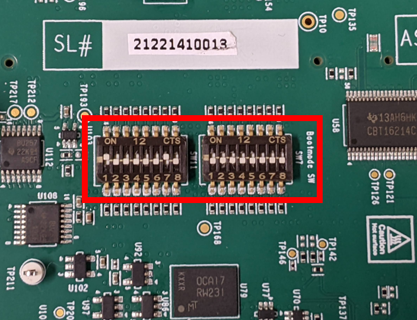
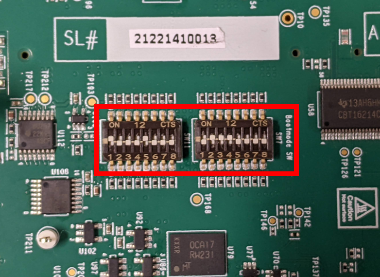

4.2.1. J784S4 EVM Hardware Setup¶
Description
The J784S4 Evaluation Module provides an affordable platform to quickly start evaluation of Jacinto™ DRA8xx Processors and accelerate development for ADAS, Gateway and many other edge analytics applications.
J784S4 EVM
Whereas other J7 family boards consist of a Common Processor Board plus SOM, the J784S4 Evaluation Module (EVM) has these two components combined into a single board. The J784S4 EVM is the main board which includes the following:
J784S4 SoC
Leo PMIC (Power controller)
32 (4x8) GiB LPDDR4 RAM
XSPI NOR flash
In addition, the J784S4 EVM has peripherals to provide most common functionality. It has expander ports to connect to different adapter cards. Following is the image of the EVM with the J784S4 SoC:
{kind=link}
Contents of the board
4xUART to USB port for Main uarts
Port0 from this is used this for Linux, RTOS UART terminal from A72
2xUART to USB port MCU domain uarts
Port0 from this is used for Cortex M4F UART
Port1 from this is used for MCU R5F UART
6x CAN FD Interfaces
Main Domain Ethernet (CPSW2G) port
MCU Domain Ethernet (CPSW2G) port
MIPI JTAG connector
SD card slot
XDS110 on board USB JTAG connector
USB Host ports
Quad Port Ethernet daughter card (bottom of EVM) sold separately
2x Display (eDP/DP) ports
Display0 is used by software for eDP/DP output
USBC port
12V Power input
Power switch
Refer to EVM connections for detailed information regarding connecting peripherals to the EVM
Switch settings
Bootmodes are selected using the SW11 and SW7 switches on the EVM. Most common boot method is to use SD card. Following are the switch settings to set the boot mode to SD for the EVM.
SW11[1-8] = 1000 0010 SW7[1-8] = 0000 0000
When you want the binaries to be loaded from a debugger like CCS, the common processor boards has to be set in the NO boot mode. Following are the switch settings to do the same.
SW11[1-8] = 1000 1000 SW7[1-8] = 0111 0000
EVM connections
Connect Following peripherals for working with processor SDK Linux
MAIN_UART is a USB connector to connect 4x main UART devices, this will register /dev/ttyUSB[0-3] in your Linux machine.
MCU_UART is a USB connector to connect 2x mcu UART devices. this will register /dev/ttyUSB[4-5] in your Linux machine.
Note
Connect the MAIN_UART and MCU_UART in order so that the device numbers are assigned correctly.
Connect a Display Port 1080p monitor to the Display0 port of the commonProcBoard.
Note
Only the monitor with preferred resolution as 1080p shall be used, any other resolution is not supported.
Connect ethernet at the RJ45 connector[4] in the commonProcBoard as shown.
Insert micro SD card at the slot shown in [7]
Connect the XDS110 connector[8] if you want to run RTOS demos or use CCS.
Connect a 1080p HDMI monitor to the HDMI port port on the Infotainment daughter card.
Note
For Linux demos, keep the bootswitch settings in SD mode For Gateway demos, keep the bootswitch settings in noboot mode
Connect a 12V power supply
Power on the board